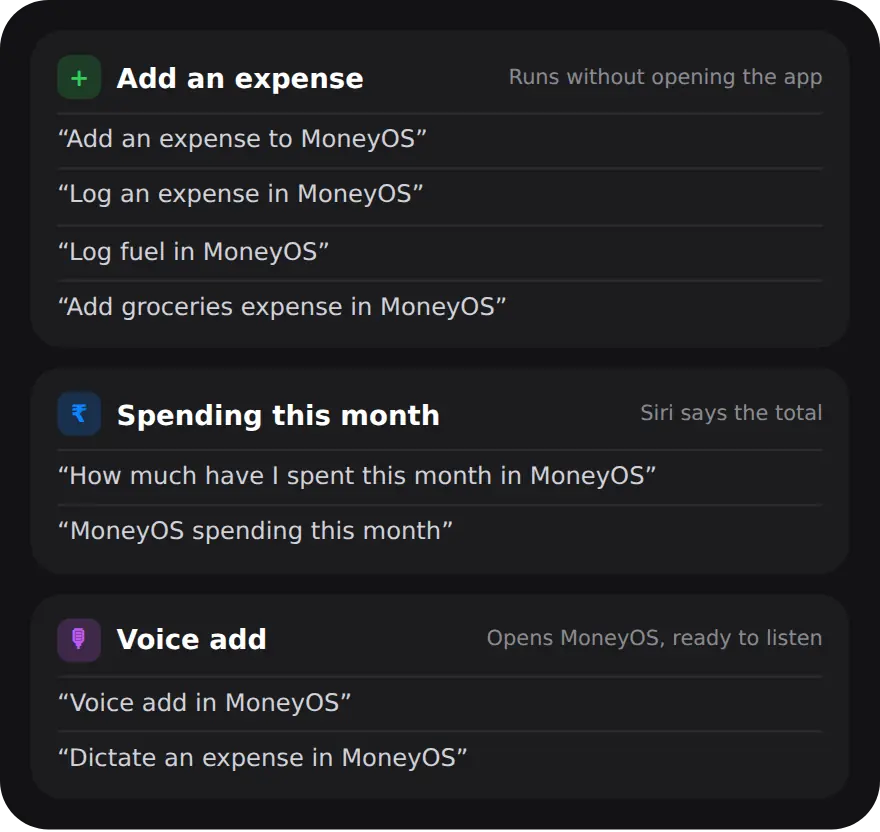

Why log expenses with Siri?
Because the best time to log a payment is the moment you make it, and Siri is the fastest way to do that when your hands are busy.
An expense tracker only helps if the entries are complete. Large payments are easy to remember. Small, frequent ones are not, and they add up: a ₹180 coffee five days a week is ₹900 a week that never makes it into your budget if you wait until the weekend to remember it. Saying one sentence at the counter, or while walking out of the shop, closes that gap. You can always add the details later.
How do I log an expense with Siri?
Say “Log an expense in MoneyOS”, give the amount when Siri asks, and Siri confirms what it saved. MoneyOS stays closed. Five steps:
- Say the phrase. Say “Log an expense in MoneyOS” to Siri. MoneyOS does not need to be open, and there is nothing to set up first.
- Give the amount. Siri asks how much. Say the number, such as “180”. It is saved in the currency you use in MoneyOS.
- Listen for the confirmation. Siri replies “Added ₹180.00.” The entry is dated now and saved in the ledger you last used: Personal, Family or Business.
- Add a category in the same breath. Say “Log coffee in MoneyOS” or “Add groceries expense in MoneyOS” and the entry lands in that category. Without one, it goes to Other.
- Tidy up later. Open MoneyOS when it suits you and tap the entry to add the shop name, change the category or date, or pick the card you paid with.
An entry added through Siri is treated like one you typed. It counts towards your monthly, daily and category limits, so if it takes a limit past 80% or 100% you get the usual alert. More on setting category limits.
If you say the same expense twice by mistake, with the same amount and the same shop moments apart, Siri tells you it looks like a duplicate and nothing is added.
What can I say to Siri in MoneyOS?
There are three things Siri can do: add an expense, tell you this month's spending, and open MoneyOS ready to take a voice entry.

To file an expense straight into a category, put the category in the sentence: Food, Coffee, Travel, Fuel, Shopping, Groceries, Medical, Subscriptions, Utilities or Other. If you want to log several things at once, such as “chai 20, petrol 1200, auto 90”, say “Voice add in MoneyOS”. That opens the app with dictation already running, and one sentence becomes several entries. Here is how logging by voice works.
Can Siri tell me how much I have spent this month?
Yes. Ask “How much have I spent this month in MoneyOS” and Siri reads out this month's spending total.
It is a quick check before a purchase you are unsure about, without unlocking the app and looking for the right screen. The total comes from the ledger you last used, so if you switch between Personal, Family and Business, it answers for the one you had open. For a running view of the month, you can also keep your budget on the Lock Screen.
How do I make a one-tap shortcut for an expense I repeat?
In the Shortcuts app, add MoneyOS's Add an expense action, fill in the amount, shop and category, and save it. One tap then logs the whole entry.
This suits things you buy often at the same price, like a daily chai or a metro top-up. Open the Shortcuts app, create a new shortcut, search for MoneyOS and pick Add an expense. Fill in Amount, Merchant and Category, then name it. You can run it from the Home Screen, by asking Siri for it by name, or from the Action Button or Back Tap if your iPhone has them. On iOS 18 and later there is also an Add expense button for Control Center that opens MoneyOS with dictation running.
Siri and Shortcuts save the entry into MoneyOS on your iPhone. There is no account and no server of ours, and the App Privacy label says Data Not Collected. Read more in the privacy policy.
Frequently asked questions
Can I add an expense with Siri without opening the app?
Yes. Say “Log an expense in MoneyOS”, give the amount when Siri asks, and Siri confirms with the amount it saved. MoneyOS stays closed.
Which categories can I say to Siri?
Food, Coffee, Travel, Fuel, Shopping, Groceries, Medical, Subscriptions, Utilities and Other. For example, “Log fuel in MoneyOS”. If you do not say one, the entry is saved under Other.
Can Siri tell me how much I have spent?
Yes. Ask “How much have I spent this month in MoneyOS” and Siri reads out this month's spending total from the ledger you last used.
Do Siri entries count towards my limits?
Yes. An expense added through Siri is checked against your limits like any other, so you still get the 80% and 100% alerts.
What if I log the same expense twice by mistake?
If the same amount at the same place was saved moments earlier, Siri says it looks like a duplicate and nothing is added.
Is MoneyOS free?
Yes. The whole app is free, with no subscription, no ads and no in-app purchases.